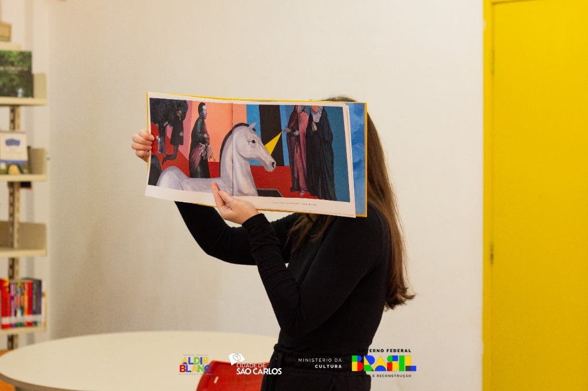
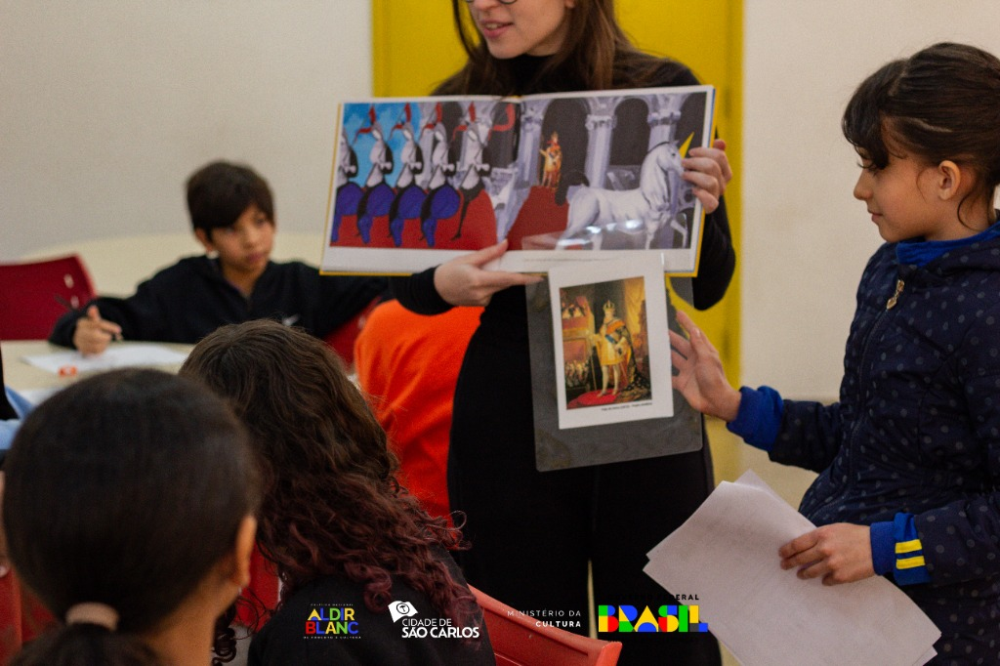
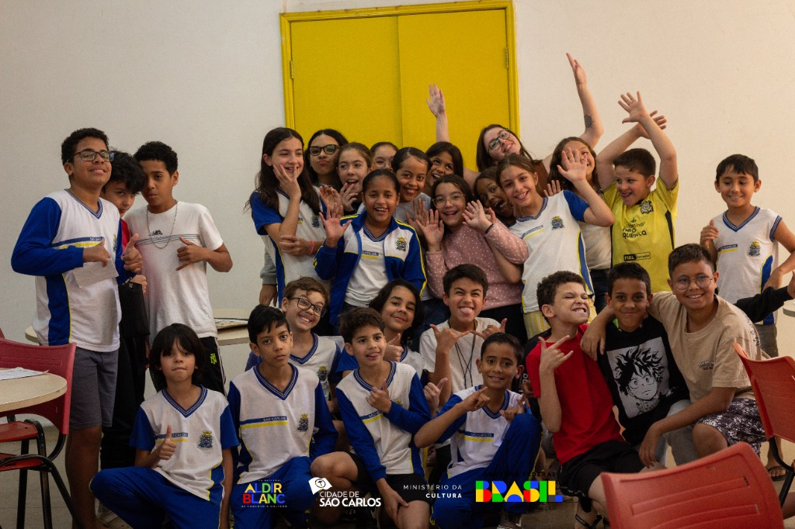
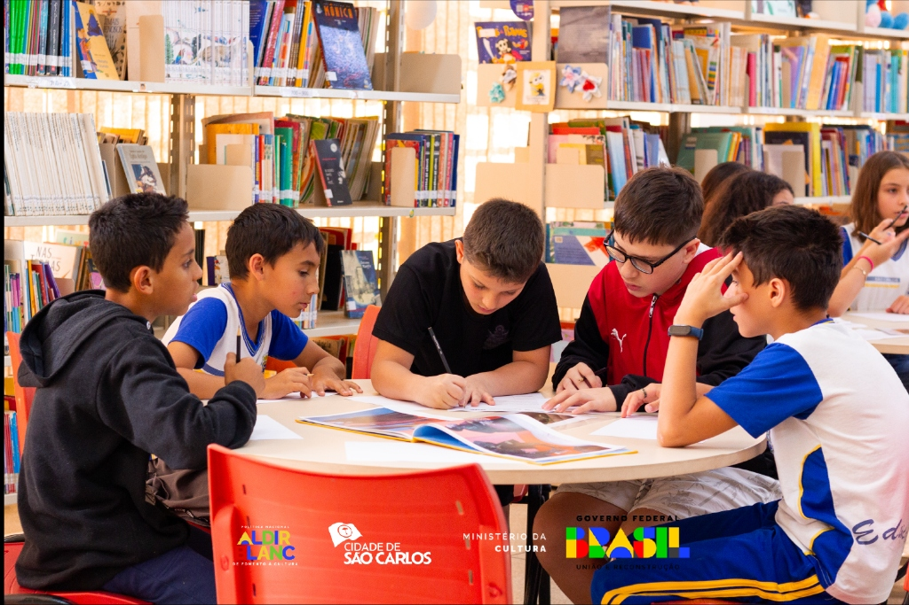

Pontes Narrativas
Projeto desenvolvido no contexto da educação pública, a partir da mediação de leitura e de práticas de investigação com o livro Dia da festa, de Renato Moriconi.
Os encontros buscaram construir uma experiência coletiva de leitura, em que interpretação, conversa e escuta se entrelaçam como parte do processo de formação leitora.
Ler para perguntar
relato de experiênciaFrustrada num trabalho antigo, encontrei refúgio na literatura e na possibilidade de imaginar eu lendo um livro que gostava muito para outras pessoas. Estava na pós graduação quando o Pontes Narrativas surgiu para mim em uma disciplina que me provocou a pensar em um projeto de mediação. Das muitas sensações que Dia da festa, de Renato Moriconi, pode causar, em mim ele gerou uma alta dose de curiosidade.
A história que narra sobre a chegada de um unicórnio que salvaria a humanidade das piores calamidades, conta, com ilustrações pra lá de belíssimas, misturando pintura e colagens. Se olhamos atentamente, vemos alguns velhos conhecidos como o Duchamp ou Operários da Tarsila do Amaral. É aí que tudo fica ainda mais interessante. Na minha leitura, comecei a imaginar explicações para tais referências. Cheguei a algumas leituras possíveis e, então, comecei a imaginar como seriam as respostas encontradas por outros leitores. Naturalmente, o projeto foi se desenhando. Unindo leitura e investigação, duas coisas que gosto muito diga-se de passagem.
Graças aos recursos da Política Nacional Aldir Blanc de Fomento à Cultura (PNAB), o projeto pode se consolidar e se tornar realidade. Após trâmites burocráticos, lá estava eu numa biblioteca diante de um grupo de crianças do 5º ano do Ensino Fundamental. Tivemos dois encontros, cujo intervalo entre um e outro foi de uma semana. No primeiro conhecemos o livro, o autor e as perguntas. Montamos pequenos grupos de pesquisa, cada um responsável pelo estudo de uma obra de arte referenciada no livro. Para além de identificar a obra, seu contexto de produção e outras informações do tipo, me interessavam as interpretações. As leituras a respeito da obra de Moriconi em diálogo com obras de séculos passados.
Após uma semana nos encontramos novamente. Em cada momento que uma obra aparecia, o grupo que a havia pesquisado se dispunha a falar. Nos contavam tudo o que haviam descoberto e imaginavam as razões dela estar ali. No nosso breve encontro, pude ver o livro se ampliando para eles. O final surpreendente continuava a surpreender. Por aqueles instantes dos nossos encontros, eles puderam se deslocar da realidade imediata e imaginar outras narrativas possíveis. Uma coisa interessante também eram as leituras que eles faziam das próprias obras pesquisadas. Ao ouví-los, o livro se ampliava para mim também.
Pontes Narrativas é um projeto que me dá muito orgulho. Um sonho imaginado que se tornou realidade. É o projeto que fez eu me entender como mediadora de leitura e almejar outras leituras possíveis para a minha própria vida. Além disso, eu o vejo como um projeto que pode sempre se renovar. A cada encontro, a cada leitor e a cada busca para interpretações, o livro continua a se ampliar, a construir pontes para outras e outras narrativas.


